方方-函数
1 定义一个函数¶
-
具名函数
function 函数名(形式参数1, 形式参数2){ 语句 return 返回值 } -
匿名函数
上面的具名函数，去掉函数名
let a = function(x,y){ return x+y } // 等号右边也叫 函数表达式fn 声明在 = 右边，fn 的作用域只在 = 右边
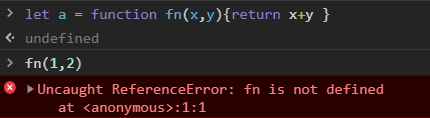
-
箭头函数
let f1 = x => x*x let f2 = (x,y) => x+y // 圆括号不能省 let f3 = (x,y) => {return x+y} // 花括号不能省 let f4 = (x,y) => ({name:x, age:y}) // 直接返回对象会出错，需要加个圆括号 -
用构造函数
基本没人用
let f = new Function('x', 'y', 'return x+y')- 在 new fn() 调用中，fn 里的 this 指向新生成的对象，这是 new 决定的
- 所有函数都是 Function 构造出来的，包括 Object, Array, Function
2 函数自身 vs 函数调用¶
fn vs fn()
-
函数自身
不会有任何结果，因为 fn 没有执行
let fn = () => console.log('hi') fn -
函数调用
打印出 hi，有圆括号才是调用
let fn = () => console.log('hi') fn()
3 函数的要素¶
3.1 调用时机¶
时机不同，结果不同
例：let setTimeout
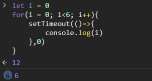
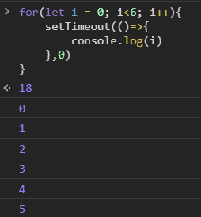
- 因为 JS 在 for 和 let 一起用的时候会加东西
- 每次循环会多创建一个 i
3.2 作用域¶
每个函数会默认创建一个作用域
-
全局变量：
- 在顶级作用域声明的变量
- window 的属性
-
局部变量：其他都是
-
函数可嵌套，作用域也可嵌套
-
作用域规则：就近原则
如果多个作用域有同名变量 a，那么查找 a 的声明时，就向上取最近的作用域
3.3 闭包¶
如果一个函数用到了外部的变量，那么这个函数加这个变量就叫做 闭包
闭包的用途以后讲
3.4 形式参数 和 返回值¶
3.5 调用栈¶
JS 引擎在调用一个函数前，需要把函数所在的环境 push 到一个数组里，这个数组叫做调用栈。
等函数执行完了，就会把环境 pop 出来，然后 return 到之前的环境，继续执行后续代码
递归函数实现阶乘
function f(n){
return n !== 1 ? n*f(n-1) : 1
}
先递进，再回归
f(4)
= 4 * f(3)
= 4 * (3 * f(2))
= 4 * (3 * (2 * f(1)))
= 4 * (3 * (2 * (1)))
= 4 * (3 * (2))
= 4 * (6)
= 24
调用栈最长有多少
chrome 大约 11000+ 或 12000+
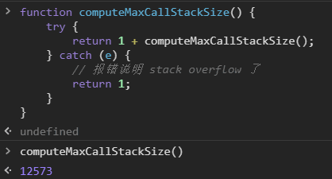
爆栈
如果调用栈中压入的帧过多，程序就会崩溃
3.6 函数提升¶
- 不管你把具名函数声明在哪里，它都会跑到第一行
let fn = function(){}，这是赋值，右边的匿名函数声明不会提升
3.7 arguments 和 this (除了 箭头函数)¶
-
arguments (关键字)
调用 fn 即可传 arguments
fn(1,2,3)，那么 arguments 就是 [1,2,3] 伪数组 -
this
目前可以用
fn.call(xxx,1,2,3)传 this 和 argumentsxxx 会被自动转化成对象（JS的糟粕）

加 'use strict' 解决问题
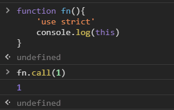
Note
- 在 fn() 调用中， this 默认指向 window，这是浏览器决定的
- 如果传给 this 的东西不是对象，JS 会自动帮你封装成对象
- this 是隐藏参数（方方的个人结论）
函数如何获取对象的引用(不通过变量名)
1. python 用 self 参数
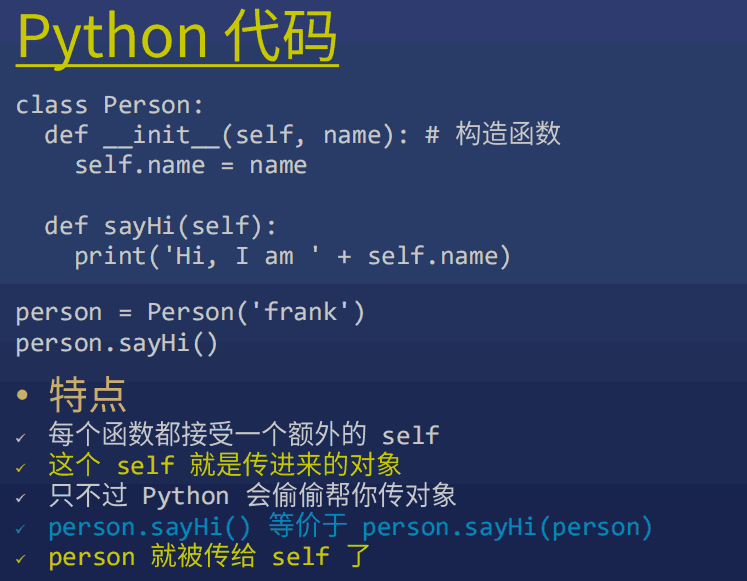
2. JS 用 this 获取对象
- person.sayHi() 会隐式地把 person 作为 this 传给 sayHi，sayHi 可以通过 this 引用 person
- 两种调用
(1) 小白调用法
会自动把 person 传到函数里，作为 this
person.sayHi()(2) 大师调用法 call (默认用)
需要自己手动把 person 传到函数里，作为 this
person.sayHi.call(person)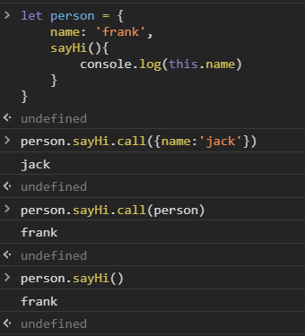
例1. 第一个参数要作为 this，但是代码里没有用 this，所以只能用 undefined 占位（null也行）
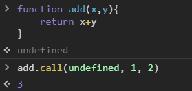
例2. forEach
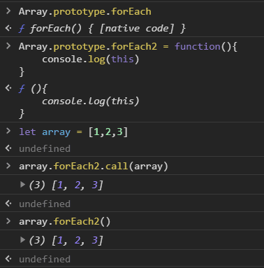
例3. 自己实现 forEach
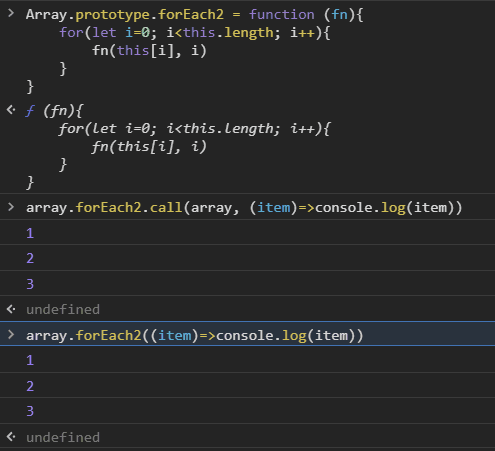
例4. 也可以是伪数组
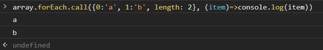
例5. bind 绑定 this
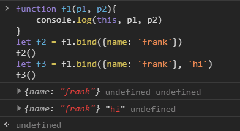
- 使用 .bind 可以让 this 不被改变
f2()等价于f1.call({name:'frank'})- vue, react 用到
-
箭头函数
里面的 this 就是外面的 this，因为箭头函数里面没有自己的 this
就算加 call 都没用
this === window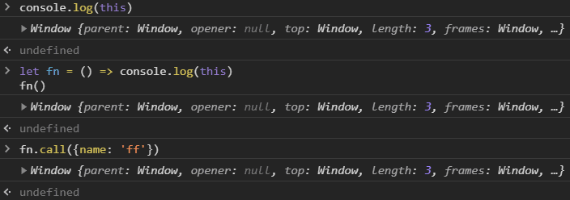
4 立即执行函数¶
只有 JS 有的变态玩意，现在用得少

例：! 和 ( )